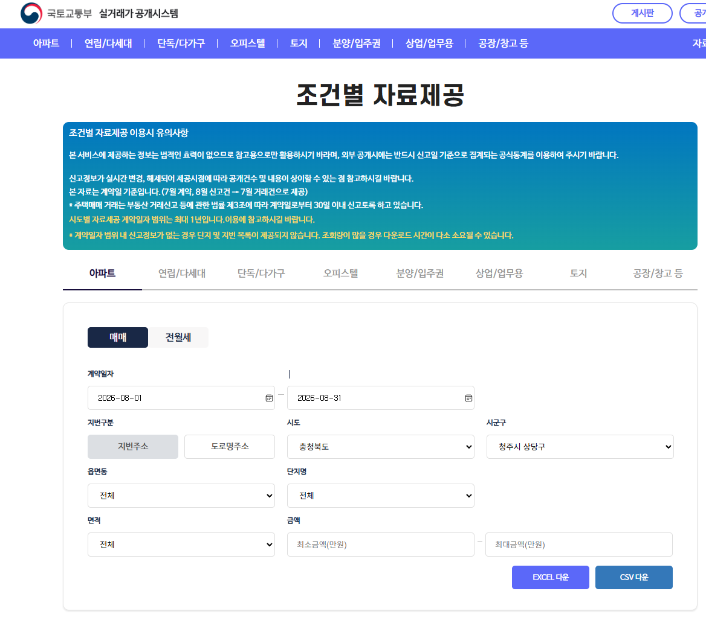

Git Logo by Jason Long · CC BY 3.0 · git-scm.com/community/logos
깃 Git
폴더 안 파일이 언제, 어떻게 바뀌었는지 기록하는 프로그램
내 컴퓨터에서 돈다 · 무료 · 인터넷 없이도 쓴다
① 폴더를 만든다
폴더 하나 = 프로젝트 하나
mkdir my-project
cd my-project
CLAUDE.md 규칙
.claude/ 설정 · 스킬 · 에이전트
자료 폴더 · 결과 폴더를 나눠 둔다
② 클로드를 연다
그 폴더에서 시작한다
claude 로 연다
데스크탑 앱 Code 탭도 같은 엔진
Shift+Tab 으로 모드 설정
원칙: 계획 먼저 보고,
맞으면 자동으로 바꾼다
③ 일을 시킨다
에이전트 루프가 돈다
지시 → 맥락 수집 → 도구 실행 → 검증
④ 이어 간다
대화는 사라지고 파일은 남는다
필요한 내용은 파일로 남겨
다음 세션에서도 이어 한다
규칙은 CLAUDE.md 에 적는다
claude --continue 이어서
/compact 접기 · Esc 두 번 되감기
2강에 더하는 것 리모트 컨트롤 — 내 컴퓨터에서 도는 세션을 휴대폰 · 브라우저에서 이어 쓴다
켜기
세션 안에서 /rc
(/remote-control 과 같다)
처음부터 claude --remote-control
연결
터미널에 뜬 주소를 열거나
QR 을 Claude 앱으로 찍는다
알아 둘 것
컴퓨터와 터미널은 켜 둔다
승인 창이 휴대폰에도 뜬다
Pro 이상 구독 · claude.ai 로그인
늘 켜려면 /config
리모트 컨트롤: 클로드 코드 공식 문서 code.claude.com/docs/en/remote-control (2026. 10. 12. 확인)
①스킬
무엇인가
정해진 절차를 파일 하나로 묶은 것
만드는 법
.claude/skills/이름/SKILL.md
name · description 아래에 절차
skill-creator 에게
"○○ 스킬을 만들어 줘"
부르는 법
/이름 으로 부르거나,
description 을 보고 클로드가 꺼낸다
②MCP
무엇인가
바깥 도구 · 데이터를 꽂는 규격
(법령 · KOSIS · 브라우저 · QGIS 등)
붙이는 법
저장소 주소를 주고 "붙여 줘"
또는 claude mcp add 이름 주소
확인하는 법
/mcp 로 연결을 본다
인증키는 파일에 적지 않는다
받은 숫자는 사람이 확인한다
③에이전트
무엇인가
대화창을 따로 가진 클로드
시킨 일을 하고 요약만 돌려준다
만드는 법
.claude/agents/이름.md
tools 로 쓸 도구를 좁힌다
검사역에게는 읽기만 준다
부르는 법
이름을 말하거나
@agent-이름 으로 못 박는다
④플러그인
무엇인가
앞의 셋을 한 폴더에 묶어
남과 나눠 쓰는 것
만드는 법
.claude-plugin/plugin.json
+ skills/ · agents/ · .mcp.json
설치하는 법
/plugin 에서 찾아 설치
예: skill-creator
claude-md-management
→ CLAUDE.md 는 "항상 이렇게", 이 넷은 "필요할 때 이것을". 만드는 기준은 하나 — 세 번 넘게 반복하는 일인가
MCP 나 스킬이 돌려면 내 컴퓨터에 먼저 깔려 있어야 하는 프로그램이 있다
예: Playwright MCP 는 Node.js 18 이상, QGIS MCP 는 QGIS 플러그인과 uv 가 있어야 돈다 (3강 11쪽)
하고 싶은 일을 말한다
"○○ 를 하고 싶어"
무엇이 필요한지 묻는다
깔려 있는지도 확인시킨다
설치한다
방법을 듣고 직접 하거나
"설치해 줘"
모르는 말은 묻는다
"이게 뭐야?"
됐는지 확인한다
/mcp · 버전 확인
그대로 쓴다 — 설치 전
"○○ MCP 를 붙이고 싶어. 내 컴퓨터에 먼저 설치해야 할 프로그램이 있는지 확인하고, 없으면 설치 방법을 알려 줘. 각각이 무엇을 하는 프로그램인지 한 줄씩 설명해 줘."
그대로 쓴다 — 모를 때
"방금 나온 uv 가 뭐야? 이걸 설치하면 내 컴퓨터에서 무엇이 바뀌는지, 필요 없어지면 어떻게 지우는지도 알려 줘."
→ 오늘은 데이터를 구하고 git · github 로 기록을 남긴다. 필요한 프로그램은 이 순서로 갖춘다
| 어디 | 무엇이 있나 | 받는 방식 |
|---|---|---|
| KOSIS 국가통계포털 kosis.kr | 인구·가구·산업 통계표 | 화면 조회 · CSV · MCP |
| 공공데이터포털 data.go.kr | 부처·지자체가 여는 거의 전부 | 파일 · API |
| SGIS 통계지리정보 sgis.mods.go.kr | 격자·행정동 단위 공간통계 | 화면 · API |
| 실거래가 공개시스템 rt.molit.go.kr | 부동산 매매·전월세 거래 | CSV · API |
| 브이월드 vworld.kr |
2D·3D 국가공간정보 — 용도지역지구·건축물·지형·경사도 | 지도 조회는 가입 없이 · 다운로드와 오픈API 는 가입 후 인증키 |
| 국토정보플랫폼 map.ngii.go.kr |
수치지도·항공사진·정사영상·국토통계지도. 대동여지도·북한지도 같은 역사자료도 있다 | 열람은 무료 · 내려받기는 가입 후 신청 (일부는 공문) |
| KTDB 국가교통DB ktdb.go.kr |
여객·화물 통행실태조사, 교통통계DB (수송실적·교통시설규모·접근성지표) | 자료신청 → 심사 뒤 제공. 즉시 받지 못한다 |
| COMPAS compas.lh.or.kr | 과제별로 정제된 도시 데이터 | 과제 단위 일괄 |
| 지자체 데이터포털 예: data.seoul.go.kr | 그 도시에만 있는 것 | 제각각 |
https://rt.molit.go.kr/pt/xls/xls.do?mobileAt=
다만 이 주소는 조건이 비어 있는 화면이다. 고른 기간과 지역은 주소에 남지 않아서 — 이 주소만 적어 두어서는 같은 파일을 다시 받지 못한다.

국토교통부_아파트 매매 실거래가 자료 · getRTMSDataSvcAptTrade
| 붙이는 조건 | 뜻 | 예 |
|---|---|---|
| serviceKey | 나를 알아보는 열쇠 | 포털에서 발급받는다 |
| LAWD_CD | 지역 — 법정동코드 앞 5자리 | 43111 (청주시 상당구) |
| DEAL_YMD | 계약 연월 | 202608 |
https://apis.data.go.kr/1613000/RTMSDataSvcAptTrade/getRTMSDataSvcAptTrade ?serviceKey=●●●&LAWD_CD=43111&DEAL_YMD=202608 → 청주시 상당구 2026년 8월 아파트 매매 182건
공공데이터포털에 가입한 뒤 서비스키(인증키)를 발급받고, 쓰려는 데이터마다 활용신청을 해야 쓸 수 있다.
조건을 바꾸면 다른 지역, 다른 달의 데이터를 가져올 수 있다.
주는 것은 둘뿐이다 — 문서 주소와 인증키
이렇게 맡긴다
"공공데이터포털 국토교통부 아파트 매매 실거래가 API 를 써 줘. 문서는 data.go.kr/data/15126469/openapi.do 고 인증키는 따로 줄게.
LAWD_CD 43111(청주시 상당구) · DEAL_YMD 202608 로 받아서 CSV 한 장으로 만들어 줘. 몇 건이 왔는지 먼저 알려 주고 시작해."
규격을 내가 읽지 않아도 된다. 다만 건수는 내가 안다 — ①과 ②에서 182건을 이미 봤다.
한 번 쓰고 말 것인가, 매달 쓸 것인가
| 한 번 쓴다면 | 매달 쓴다면 |
|---|---|
| 대화로 시킨다 | 스킬로 만든다 — 3주차에 배운 것 |
| 그때그때 프롬프트를 다시 쓴다 | 「상당구 지난달 실거래가」 한 마디면 된다 |
| 무엇을 시켰는지 남지 않는다 | SKILL.md 에 절차가 남는다 |
3주차에 붙인 KOSIS MCP
앞의 실거래가는 인증키를 받아 API 를 불렀다. KOSIS 통계표에는 그 단계가 없다 — 주소 하나로 붙는 MCP 서버를 시범 운영한다. 1,360여 종 국가승인통계, 26만여 통계표가 대상이다.
통계표 번호를 미리 알 필요도 없다. kosis_search 가 표를 찾고 kosis_region_code 가 청주시 = 43110 을 돌려준다. 그 둘을 kosis_get_data 에 넣으면 숫자가 온다.
다만 시범서비스이며 국가데이터처의 공식 입장이 아니다. 중요한 판단 전에는 KOSIS 원자료를 확인한다 (KOSIS 공지, 2026-07-08). 뒤에서 이 서버로 청주시 인구를 받아 본다.
①②③ 이 같은 182건을 내놓아야 한다. 어긋나면 거기서 멈춘다
| 무엇을 보나 | 왜 | 어긋나면 |
|---|---|---|
| 건수 | ①에서 화면으로 센 182건이 기준이다 | 기간을 어떻게 읽었는지, 취소 거래를 넣었는지 묻는다 |
| 어디서 왔나 | API 이름과 제공기관을 되묻는다 | 대지 못하면 그 숫자는 쓰지 않는다 |
| 자릿수가 그럴듯한가 | 상당구 한 달에 182건이면 하루 여섯 건꼴이다 | 자릿수가 어긋나면 합산을 잘못한 것이다 |
①②를 해 본 사람만 ③을 의심할 수 있다. 세 번 받아 보는 이유가 이것이다.
질문은 하나다 — 청주시 인구는 25년 동안 어떻게 변했나?
3주차에는 한 프로젝트에 붙였다
이번에는 전역(user)으로 붙인다
claude mcp add --transport http \ kosis https://kosismcp2026.vercel.app/api/mcp \ --scope user # 범위 --scope local 나 · 이 프로젝트에서만 (기본값) --scope project .mcp.json 으로 저장소에 함께 --scope user 내 모든 프로젝트
인증키가 없는 원격 서버라 리모트 컨트롤로 시켜도 된다
세션을 열고 이렇게 시킨다
"https://kosismcp2026.vercel.app/api/mcp — 이 KOSIS 원격 MCP 를 내 모든 프로젝트에서 쓸 수 있게 user 범위(전역)로 붙여 줘. 인증키는 없어.
붙인 뒤에 /mcp 로 연결을 확인하고, 청주시 총인구 2024년 값을 하나 받아서 실제로 숫자가 오는지 보여 줘."
출처: 클로드 코드 공식 문서 code.claude.com/docs/en/mcp · KOSIS MCP 시범서비스 (KOSIS 공지, 2026-07-08)
이렇게 묻는다
"청주시 총인구를 2000년부터 2024년까지 연도별로 받아 줘. 어느 통계표에서 왔는지도 같이 알려 줘."
클로드가 한 일 — 다섯 번 불렀다
표를 잘못 짚는 것은 어느 쪽에서나 같다 — 맡기면 2번에서 걸러진다.
돌아온 값 (일부)
| 연도 | 총인구(명) |
|---|---|
| 2000 | 580,861 |
| 2005 | 630,939 |
| 2010 | 655,971 |
| 2013 | 672,904 |
| 2014 | 831,521 |
| 2020 | 844,993 |
| 2024 | 854,537 |
출처: KOSIS 「행정구역(시군구)별, 성별 인구수」(행정안전부, DT_1B040A3), KOSIS MCP 로 2026-09-28 조회
청주시 + 청원군 통합을 모른다면 2013~2014년의 차이를 그대로 받아들인다. AI 를 사용하면 오히려 오류를 범할 확률이 줄어들 수 있다.
| 겪는 것 | 무슨 일인가 |
|---|---|
| 글자가 깨진다 | 공공기관 CSV 는 EUC-KR 인 경우가 많다. 엑셀은 열리는데 파이썬에서 깨지면 이것이다 |
| 숫자가 글자다 | 거래금액에 쉼표가 들어 있다 — "1,250" 은 숫자가 아니다 |
| 지역이 안 맞는다 | 행정동과 법정동은 다르다. 통계는 행정동, 부동산은 법정동인 경우가 많다 |
| 기간이 비어 있다 | 거래가 없는 달은 행이 아예 없다. 0 이 아니라 없음이다 |
| 단위가 다르다 | 거래금액은 만원, 면적은 ㎡. 평으로 바꾸면 어디선가 어긋난다 |
전부 클로드가 처리해 준다. 다만 처리했다는 사실을 알고 있어야 결과가 이상할 때 어디를 볼지 안다.
데이터만 받아 두면 증거가 되지 않는다 —
메타데이터를 함께 정리한다
출처 기관과 주소 · 받은 날짜 · 대상 기간과 지역 · 단위 · 집계 기준 · 결측을 어떻게 뒀나 · 알려진 한계
→ 석 달 뒤의 나는 이 파일이 어디서 왔는지 기억하지 못한다.
남이 물었을 때 답하지 못하면 그 분석은 쓸 수 없다
실습
청주 상당구 실거래가를 세 방식으로 받기 — 약 1시간 30분
대상
청주시 상당구 아파트 매매 실거래가 · 최근 12개월
왜 세 번이나 받나
메모해 둘 것: 전체 건수. ②③의 결과를 이것과 맞춰 본다.
조건을 하나씩 바꿔 보면 무엇이 어떻게 걸러지는지 보인다. API 의 파라미터가 곧 이 화면이다.
인증키는 남에게 보이지 않는다. 화면 공유나 제출물에 그대로 넣지 않는다.
프롬프트 예시
"공공데이터포털의 국토교통부 아파트 매매 실거래가 API를 쓰려고 해. 인증키는 따로 알려줄게.
지역은 청주시 상당구(LAWD_CD 43111), 기간은 최근 12개월이야. 열두 달을 각각 받아서 CSV 한 장으로 합쳐 줘.
합치기 전에 어떻게 받아서 어떻게 합칠지 먼저 알려 줘. 다 받은 뒤에는 달마다 몇 건이 왔는지 표로 보여 줘."
마지막 두 문장이 핵심이다. 받기 전에 방법을, 받은 뒤에 건수를 요구한다 — 그래야 ①에서 센 건수와 맞춰 볼 수 있다.
건수가 다르면 멈춘다. 기간 해석이 다른지, 취소 거래를 포함했는지 물어본다.
데이터 옆에 메타데이터를 같이 둔다 — 앞 장의 일곱 줄이다
이렇게 만들게 한다
"방금 받은 CSV 옆에 같은 이름의 출처 문서(.md) 를 만들어 줘. 출처 · 주소 · 받은 날 · 범위 · 단위 · 집계 기준 · 결측·한계 일곱 칸으로 쓰고, 내가 준 조건과 API 문서에서 확인한 것만 적어. 확인하지 못한 칸은 「확인 필요」로 남겨 줘."
| 칸 | 예 |
|---|---|
| 출처 | 국토교통부 아파트 매매 실거래가 자료 (공공데이터포털 API) |
| 주소 | apis.data.go.kr/1613000/RTMSDataSvcAptTrade/getRTMSDataSvcAptTrade |
| 받은 날 | 2026. 10. 5. |
| 범위 | 청주시 상당구 (LAWD_CD 43111), 2025. 10. ~ 2026. 9. 계약분 |
| 단위 | 거래금액 만원 · 전용면적 ㎡ |
| 집계 기준 | 계약일 기준이다 (신고일 기준이 아니다) |
| 결측·한계 | 거래 없는 달은 행이 아예 없다. 신고 시차가 있고, 취소 거래 처리 방식은 확인 필요 |
Git Logo by Jason Long · CC BY 3.0 · git-scm.com/community/logos
깃 Git
폴더 안 파일이 언제, 어떻게 바뀌었는지 기록하는 프로그램
내 컴퓨터에서 돈다 · 무료 · 인터넷 없이도 쓴다
깃허브 GitHub
깃의 기록을 인터넷에 올려 두는 서비스
백업 · 공유 · 협업. 저장소마다 공개 / 비공개를 정한다
github.com · 가입하면 기본 기능은 무료
설치하는 법 — 실습에서는 이 명령을 클로드가 실행한다
| 맥 | 윈도우 | 깃허브 |
|---|---|---|
| brew install git gh 또는 xcode-select --install |
winget install --id Git.Git -e --source winget winget install --id GitHub.cli --source winget |
github.com 에서 가입한 뒤 gh auth login 으로 잇는다 |
출처: 깃 공식 사이트 git-scm.com/install · 깃허브 CLI cli.github.com (2026. 10. 12. 확인)
클로드는 파일을 실제로 고친다.
고치기 전 상태가 어딘가 남아 있어야 마음 놓고 시킬 수 있다
→ 깃은 되돌릴 수 있게 해 주고,
깃허브는 그것을 남에게 보여 줄 수 있게 한다.
증거를 다루는 사람에게 이것은 편의가 아니라 요건이다
| 무엇 | 해결하는 것 | 이 수업에서의 쓸모 |
|---|---|---|
| ① 깃 | 내 컴퓨터 안의 기록과 되돌리기 | AI 가 고친 것을 되돌린다 |
| ② 깃허브 | 남과 나누기와 백업 | 분석을 제출하고 재현시킨다 |
| ③ 클로드 + 깃 | 커밋·올리기를 맡기기 | 기록을 남기는 품을 줄인다 |
깃 명령을 외우는 수업이 아니다. 무엇을 왜 기록하는지를 배우고 명령은 클로드에게 맡긴다.
① 깃
① 깃
① 깃
git init 이 폴더를 기록 대상으로 git status 지금 뭐가 바뀌었나 git add . 기록할 것을 고른다 git commit 이름 붙여 남긴다 -m "동별 요약 로직 확정" git log --oneline 지금까지의 기록 git diff 무엇이 바뀌었나
되돌리는 명령은 위험해서 여기 적지 않았다. 필요할 때 클로드에게 물어본다 — 무엇이 지워지는지 설명을 듣고 승인한다.
커밋 메시지를 이렇게 쓴다
| 이렇게 말고 | 이렇게 |
|---|---|
| 수정 | 면적 하한을 60㎡ 로 정함 |
| ㅁㄴㅇㄹ | 취소 거래 제외 규칙 추가 |
| 최종 | 동별 요약표 생성 로직 |
"무엇을 왜 바꿨는지" 를 적는다. 석 달 뒤에 이 목록만 읽고도 분석의 흐름이 보여야 한다.
출처: 깃 공식 문서 git-scm.com/doc
① 깃
| 넣지 않는다 | 왜 |
|---|---|
| 인증키 · 비밀번호 | 한 번 올라가면 지워도 기록에 남는다. 저장소를 공개로 바꾸는 순간 노출된다 |
| 큰 원본 데이터 | 수백 MB 를 커밋하면 저장소가 감당하지 못한다. 받는 방법을 적어 두면 된다 |
| 개인정보가 든 자료 | 5주차에 말한 비공개 데이터가 여기 해당한다 |
| 다시 만들 수 있는 것 | 그림·PDF 처럼 스크립트로 재생성되는 산출물 |
.env # 인증키 data/raw/ # 원본 데이터 — README 에 받는 법을 적는다 output/*.png # 스크립트로 다시 만든다
첫 커밋 전에 .gitignore 부터 만든다. 올라간 뒤에 지우는 것은 훨씬 어렵다.
② 깃허브
깃은 내 컴퓨터 안의 기록이다. 노트북이 고장 나면 함께 사라진다.
깃허브는 그 기록을 인터넷에 올려 두는 곳이다. 백업이자, 남에게 보여 주는 창구다.
gh auth login 한 번만 gh repo create 저장소 만들기 git push 올리기 git pull 내려받기
공개할 것과 하지 않을 것
| 이 수업이라면 | |
|---|---|
| 공개(public) | 분석 스크립트 · 로직 문서 · 결과표 · README |
| 비공개(private) | 확정 전 초안, 개인정보가 섞였을 가능성이 있는 것 |
공개는 되돌리기 어렵다. 헷갈리면 비공개로 만들고 나중에 바꾼다 — 반대 방향은 이미 늦다.
출처: 깃허브 CLI cli.github.com
② 깃허브
남이 이 저장소를 열었을 때 가장 먼저 보는 화면이다.
이 수업의 기준은 하나다 — 이것만 읽고 내 결과를 다시 만들 수 있는가.
# 청주 상당구 실거래가 분석 ## 무엇을 했나 동별 ㎡당 가격을 비교했다. ## 데이터 국토부 실거래가 API (공공데이터포털) 상당구 43111 · 2025.10~2026.09 받는 법: 인증키를 발급받아 `.env` 에 넣고 `python fetch.py` ## 분석 규칙 CLAUDE.md 참조 (60㎡ 초과 · 중앙값) ## 다시 만들려면 `python fetch.py` → `python summary.py` 결과는 `output/` 에
③ 클로드 + 깃
브랜치(branch)는 main 을 그대로 둔 채 갈라져 나와 실험하는 작업 줄기다. 좋으면 main 에 합치고(merge), 아니면 버린다
③ 클로드 + 깃
정리
깃Git
폴더의 변경 기록을 남기는 프로그램
내 컴퓨터에서 돈다
깃허브GitHub
그 기록을 올려 두는 인터넷 서비스
백업 · 공유
저장소repository
기록이 쌓이는 곳. 폴더 안의 .git
git init
README
저장소의 설명서
남이 가장 먼저 보는 화면
스테이징add
이번 기록에 담을 것을 골라 둔다
git add
커밋commit
"이 시점의 전부" 를 이름 붙여 남긴다
git commit -m "…"
푸시push
내 커밋을 깃허브로 올린다
git push
풀pull
깃허브의 새 커밋을 내려받는다
git pull
.gitignore
올리지 않을 파일 목록 — 인증키 · 원자료
브랜치branch
main 을 두고 갈라져 나온 실험 줄기
git switch -c 이름
머지merge
실험이 쓸 만하면 main 으로 합친다
git merge 이름
상태 · 기록status · log
무엇이 바뀌었나, 지금까지 무엇을 남겼나
git status · git log
■ 도구와 자리 · ■ 기록을 옮기는 동작 · ■ 지키고 나누는 법
③ 클로드 + 깃
위 명령은 알고만 있는다. 실제로는 모두 클로드에게 요청하거나, 클로드의 판단을 확인하는 형태로 진행한다
이렇게 시킨다 — 한 마디면 된다
"커밋해 줘."
"깃허브에 올려 줘."
"어제 커밋한 상태로 되돌려 줘."
"이 저장소의 커밋 기록을 읽고
분석이 어떻게 바뀌어 왔는지 정리해 줘."
무엇을 담을지, 메시지를 어떻게 쓸지는 클로드가 바뀐 내용을 보고 정한다
클로드가 먼저 확인을 청할 때 (예)
"올라갈 목록에 .env 가 있습니다. 인증키가 든 파일 같습니다.
.gitignore 에 넣고 빼고 커밋할까요?"
"이렇게 되돌리면 아직 커밋하지 않은 변경 3개 파일이 사라집니다.
진행할까요?"
이때가 내가 판단하는 자리다 — 무엇이 지워지고 무엇이 올라가는지 읽고 승인한다
커밋 전에 무엇이 담기는지 한 번 본다 — 모르고 승인하면 인증키가 함께 간다.
| 사고 | 막는 법 |
|---|---|
| 인증키를 커밋했다 | 첫 커밋 전에 .gitignore 부터 만든다. 이미 올렸다면 그 키를 폐기하고 새로 발급받는다 — 기록에서 지우는 것보다 그게 빠르고 확실하다 |
| 비공개 데이터를 올렸다 | COMPAS 비공개분·개인정보는 저장소에 넣지 않는다. 받는 방법만 적는다 |
| 큰 파일로 저장소가 막혔다 | 원본 데이터는 .gitignore 로 뺀다 |
| AI 가 고친 걸 못 되돌린다 | 작업을 시작하기 전에 커밋해 둔다. 되돌릴 지점이 있어야 마음 놓고 시킨다 |
첫 줄이 가장 흔하고 가장 아프다. 공개 저장소는 검색된다.
이 수업의 모든 프로젝트는 깃으로 기록하고 깃허브에 올린다
습관으로 만든다
→ 시작할 때 "커밋해 줘" · 끝날 때 "커밋하고 깃허브에 올려 줘" · 다른 컴퓨터에서는 "깃허브에서 받아 와 줘"
실습
2주차부터 쌓은 내 위키를 깃허브에 올리기 — 약 1시간 30분
2주차부터 쌓은 내 위키가 깃허브 비공개 저장소에 올라가 있고, 브라우저에서 눈으로 확인된다
| 시각 | 할 일 | 끝났다는 신호 |
|---|---|---|
| 0:00–0:20 | ⓪ 깃 설치 · 깃허브 가입 | git --version 이 찍히고 gh auth status 가 로그인을 보인다 |
| 0:20–0:45 | ① 기록을 시작한다 | 첫 커밋에 raw/ 와 인증키가 없다 |
| 0:45–1:05 | ② 깃허브에 올린다 | 저장소 주소가 나왔다 |
| 1:05–1:30 | ③ 깃허브에서 확인한다 | 브라우저에 wiki/ 가 보이고 raw/ 는 없다 |
시작 전 확인
원격으로 돌릴 때가 많다. 설치는 내 손이 아니라 세션이 도는 PC 에서 일어난다
이렇게 시킨다
"이 컴퓨터에 git 과 gh(깃허브 CLI) 가 설치돼 있는지 확인해 줘. 없으면 이 운영체제에 맞는 방법으로 설치하되, 설치 명령을 실행하기 전에 무엇을 하는지 먼저 알려 줘. 끝나면 두 프로그램의 버전을 보여 줘."
# 맥 (Homebrew 가 있을 때) brew install git gh # 윈도우 winget install --id Git.Git -e --source winget winget install --id GitHub.cli --source winget
출처: 깃 공식 사이트 git-scm.com/install · 깃허브 CLI cli.github.com (2026. 10. 12. 확인)
계정은 내가 만든다
내 이메일과 비밀번호라 클로드에게 시키지 않는다
그다음, 클로드와 깃허브를 연동한다
이렇게 시킨다
"이 컴퓨터의 클로드가 내 깃허브 계정으로 일할 수 있게 연동해 줘. 앞으로 내가 "깃허브에 올려 줘", "깃허브에서 받아 와 줘" 라고만 해도 push 와 pull 이 바로 되도록 설정해 줘.
로그인할 때 일회용 코드가 나오면 바로 보여 주고, 끝나면 연동이 됐는지 확인해서 알려 줘."
클로드가 실행하는 명령 — gh auth login --web · gh auth setup-git
코드가 나오면 휴대폰이나 브라우저로
github.com/login/device 에 들어가
코드를 넣고 승인한다.
원격이어도 된다.
출처: 깃허브 CLI 매뉴얼 cli.github.com/manual/gh_auth_login (2026. 10. 12. 확인)
올리지 않을 것부터 정한다 — 비공개인 것은 .gitignore 로
raw/ # 원자료 — 강의노트·논문 원문, 저작권 자료 .env # 인증키
나머지 — wiki/ · CLAUDE.md · .claude/ 의 스킬과 에이전트 — 는 올린다
git init git status git add . git commit -m "위키 첫 기록"
이렇게 시킨다
"이 위키 폴더를 깃 저장소로 만들어 줘. raw/ 와 인증키가 든 파일(.env 같은 것)은 .gitignore 로 빼고, 나머지는 올리게 해 줘. 커밋하기 전에 올라갈 파일 목록을 보여 줘."
이렇게 시킨다
"깃허브에 my-wiki 라는 비공개 저장소를 만들고 지금 커밋을 올려 줘. README.md 가 없으면 이 위키가 무엇인지 세 줄로 써서 함께 올려 줘. 올리기 전에 저장소 이름과 공개 여부를 한 번 확인해 줘."
gh repo create my-wiki --private \
--source=. --push
비공개(private)로 둔다.
위키 페이지도 강의노트에서 나온 내용이라 저작권이 걸린다
공개로 바꾸는 것은 나중에도 된다. 반대 방향은 이미 늦다 (34쪽)
출처: 깃허브 CLI 매뉴얼 cli.github.com/manual/gh_repo_create
클로드가 "올렸다" 고 해도 내 눈으로 본다 — 휴대폰 브라우저로도 된다
다음 주부터 위키를 갱신할 때마다 "커밋하고 깃허브에 올려 줘" 한 마디를 붙인다.
3주차 과제는 내 일을 다뤘다. 이번엔 바깥 데이터다
SGIS(통계지리정보서비스)는 오픈API 93종을 연다 — 인구·가구·주택·사업체 통계, 행정구역 경계, 지오코딩, 격자, 자연재해.
감쌀 것은 두세 개면 된다
출처: 통계지리정보서비스 개발지원센터 sgis.mods.go.kr/developer/html/main.html (2026. 9. 6. 확인). API 93종 · 인증키당 하루 50,000회
보는 것 넷 — 분량은 세지 않는다
Q & A
권규상 Kyusang Kwon
kyusang.kwon@chungbuk.ac.kr